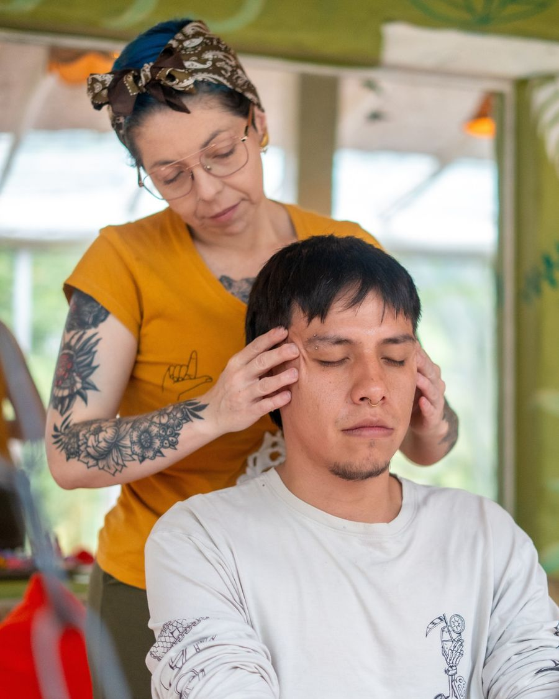
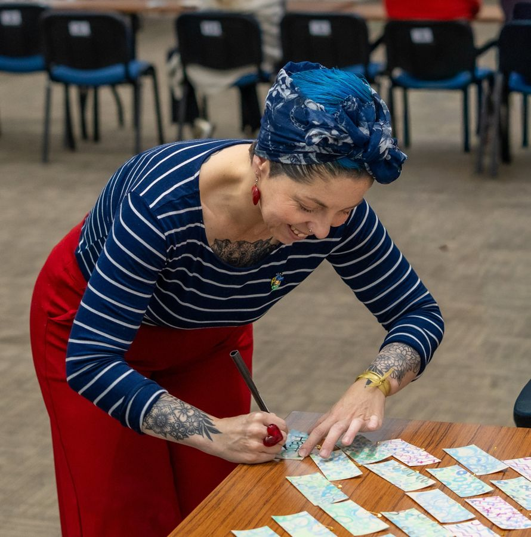
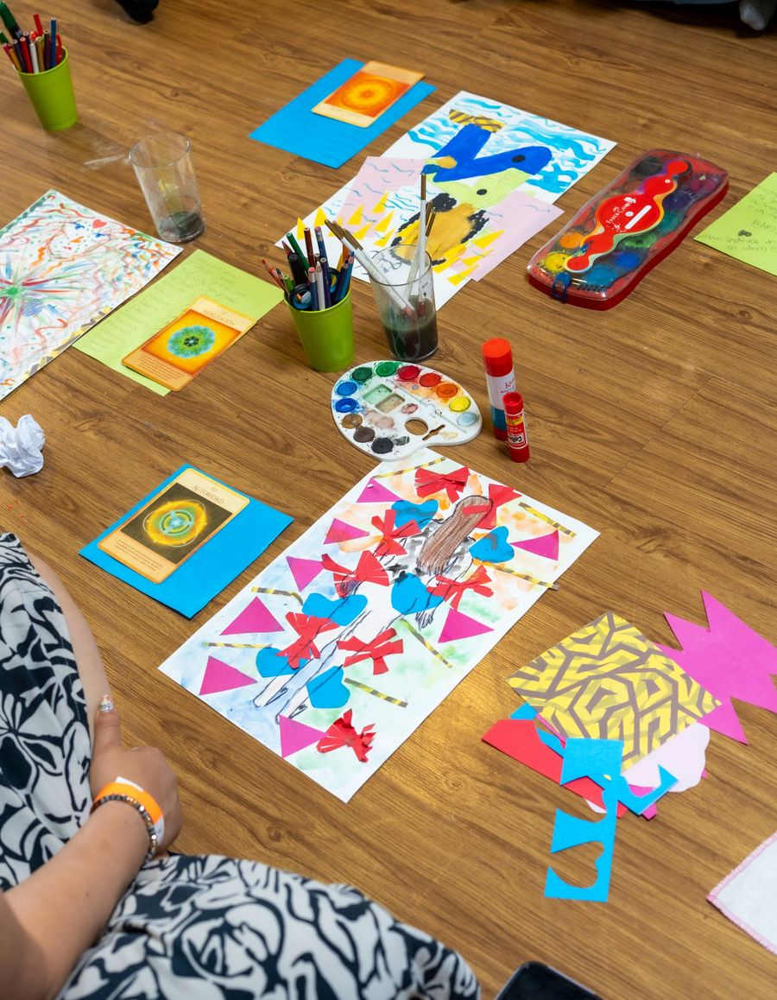
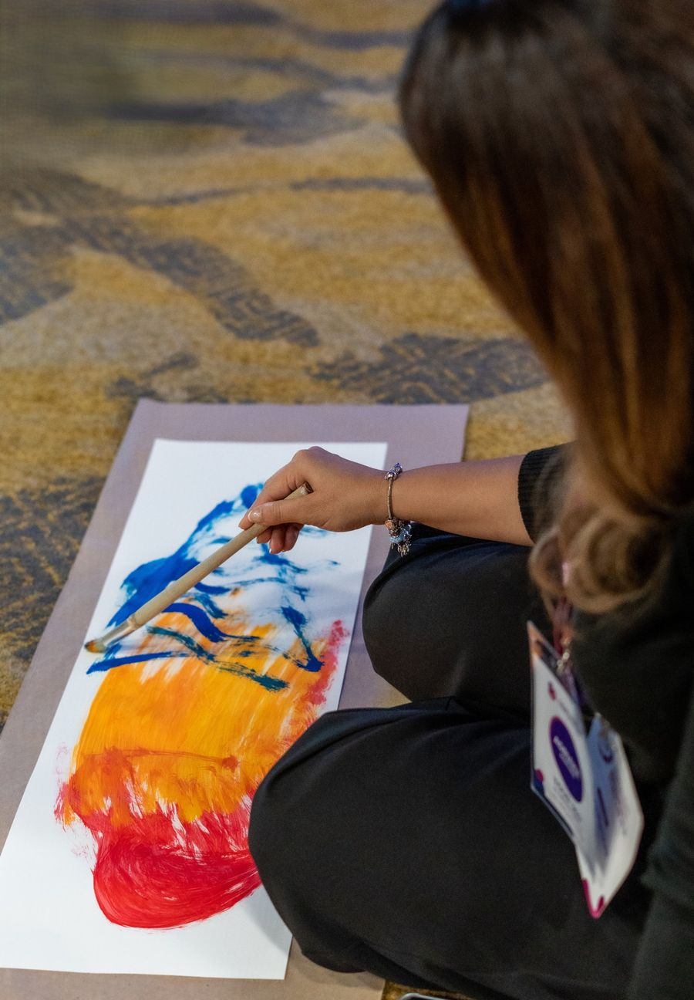

Para empezar
Oasis Regenerativo
60 minutos para cuando estás al tope: detienes el ruido, sueltas la carga y recuperas el aire. Una de cuatro técnicas, elegida para lo que traes ese día: bioliberación facial, trazo en movimiento, cuerpo consciente y aromas, o reflexología.
$195.000 la sesión
Paquete de 6: $1.050.000
Agendar mi Oasis

Proceso 1:1
El Despertar Interior
Para momentos de transición en los que sientes que perdiste el norte. Entendemos lo que sientes y de dónde vienen tus inseguridades, para que vuelvas a ser tu propio lugar seguro. Una sesión cada 8 a 10 días.
$1.250.000 paquete de 6
Sesión de 90 min: $250.000
Quiero conversar

Membresía en grupo
El Origen · Cuatro Estaciones
Regresa a ti para decidir mejor. No es un descanso, es una restauración: cuatro estaciones de 5 horas, los sábados, con arte, naturaleza y cuerpo. Grupos de máximo 15 personas.
$1.325.000 la membresía
Estación individual: $365.000
Reservar mi lugar

Taller abierto
Laboratorios de trazo y pintura consciente
El garabato y la mancha como herramientas para apagar el ruido mental. No se trata de técnica ni de hacer algo bonito: se trata de respirar, soltar y mirar. 3 horas.
$140.000 presencial
Virtual: $90.000
Ver próximas fechas
Precios en pesos colombianos, sin IVA. Si necesitas factura electrónica, se suma el IVA del 19%.